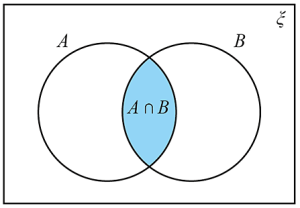
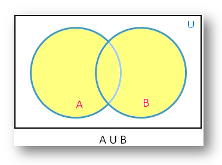
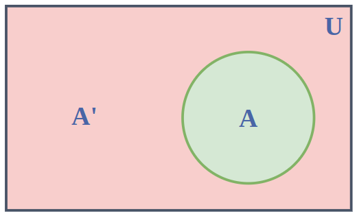
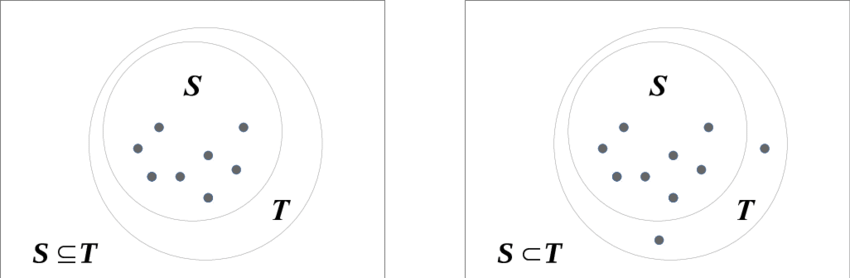
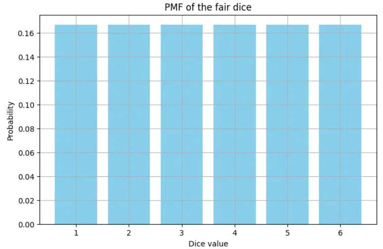
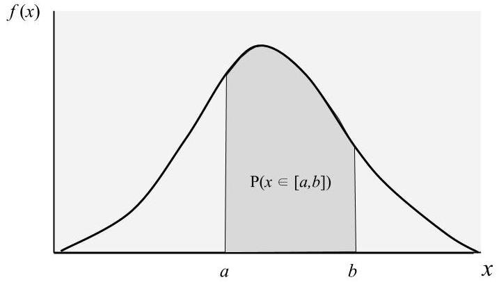
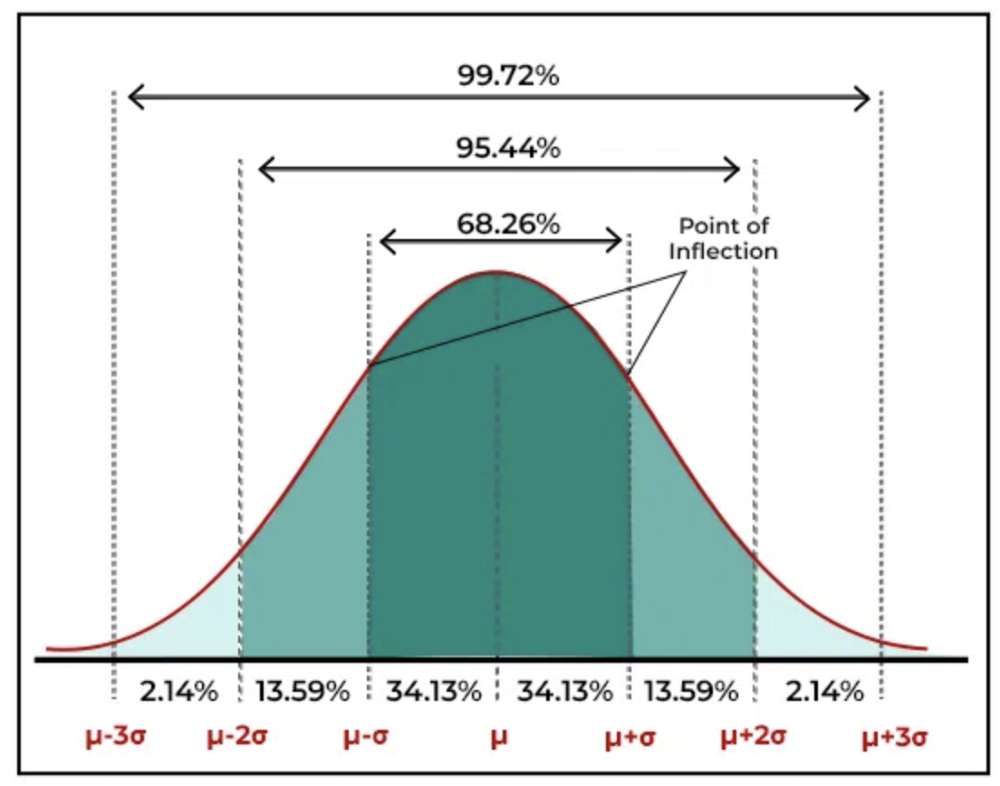

Essential Probability Theory
Module 3 (Section 0: Essentials)
Preface
Probability forms the basis of much of modern statistical methods. Probability is also essential for many formal mathematical models of political situations. Thus, it is essential for Political Scientists to understand the basics of probability.
This module introduces the core concepts of probability needed to conduct quantitative analysis. Chapter 1 focuses on Set Theory, which forms the basis of many probability rules, as well as provides much of the notation we will use throughout the book. Chapter 2 focuses on the fundamentals of probability, including the axioms of probability, counting, conditional probabilities, and Bayes’ Theorem. Chapter 3 is an introduction to random variables, their respective probability mass/density functions, expectations and variance, as well as a few common distributions.
Prerequisites: Modules 1 and 2 (Or university level Single Variable Calculus and basic linear algebra)
Chapter 1: Set Theory
1.1: Sets
A set, is any collection of objects
It could be a collection of all oranges in a basket
It could be a set of all possible fruits in the store
It could be the set of all things in the universe
The set is the collection of objects, while the elements of the set are the specific objects within a set
Sets have a formal way of being notated:
A capital letter represents a set. For example, the set \(A\)
A lowercase letter represents an element in that set. For example, element \(a\) within set \(A\)
We can use any letters - just be consistent - the elements of a set should be the same as the letter of the set (ex. \(b\) and \(B\))
Common types of sets we use include:
\(N\): Natural numbers - numbers we use to count 1 onwards \(\{1, 2, 3, ... \}\)
\(W\): Whole numbers - counting numbers from 0 onwards \(\{ 0, 1, 2, ... \}\)
\(Z\): Integers - non-decimal numbers both negative and positive \(\{ ... ,-2, -1, 0, 1, 2, ... \}\)
\(Q\): Rational numbers - numbers that can be written as fractions
\(R\): Real numbers: any numbers on the real number line, including irrational ones like \(\pi\)
\(C\): Complex numbers - values with an imaginary pane (ex. \(3 + 4i\))
1.2: Defining Sets
To define a set, we need some additional notation the following notation:
The symbol \(\in\) means “in” or “belongs to”
- For example \(a \in A\) means element \(a\) belongs to set \(A\)
The symbol \(:\) means “such that” - often used to specify a criteria
The symbol \(\equiv\) means “is equivalent to” or “represents”
We also need to introduce interval notation:
\(()\) parentheses on an interval imply not including the boundaries
- For example, interval \((a,b)\) implies \(a < x < b\)
\([]\) brackets on an interval imply including boundaries
- For example, interval \([a,b]\) implies \(a ≤ x ≤ b\)
We can also mix and match them, for example, \([a,b)\)
We can define sets in many different ways.
We can list out all the elements of a set
- For example, \(A = \{ 1, 2, 3, 4, 6, 9 \}\)
We can define them with an interval
- For example, \(A = [0,1]\)
We can also define them in a very formal way as follows:
For example, \(A = \{x : 0 ≤ x ≤ 1, x \in R \}\)
That basically means, set \(A\) is defined as the values of \(x\) such that \(x\) is between or equals \(0\) and \(1\), and \(x\) belongs to the set of all real numbers \(R\)
1.3: Set Operators
There are a few different set operators that are important to understand.
Intersection: The overlap between two sets
The intersection of set \(A\) and \(B\) is notated as \(A \cap B\)
Basically, this means the set of elements that are contained in both set \(A\) and \(B\)
For example, if \(A = \{1,2,3 \}\), and \(B = \{ 2, 3, 4 \}\), then \(A \cap B = \{ 2, 3 \}\)
If there is no overlap between \(A\) and \(B\), then we notate it as \(A \cap B = \varnothing\)
The figure below shows an intersection with a venn diagram: only elements that are contained in both set \(A\) and \(B\) are included:

Union: The combination of two sets
The union of set \(A\) and \(B\) is notated as \(A \cup B\)
Basically, this means the combination of all elements in \(A\) and \(B\)
For example, if \(A = \{1,2,3 \}\), and \(B = \{ 2, 3, 4 \}\), then \(A \cup B = \{ 1,2,3,4 \}\)
The venn diagram shows a union: everything within \(A\) + within \(B\) + the intersection \(A \cap B\)

Complement: Everything not in a set
The complement of set \(A\) is notated as \(A'\) or \(A^c\)
Basically, this means all elements that are not in set \(A\), but are part of the universal set
- Universal set basically means all the elements that are plausible in our current situation
So, if the universal set contains \(\{ 1,2,3,4,5 \}\), and \(A = \{ 1, 2 \}\), then \(A^c = \{ 3,4,5 \}\)
In the diagram below, everything within circle \(A\) is within set \(A\), while everything outside is the complement of \(A\), notated as \(A'\) or \(A^c\)

Subset: Meaning a set’s elements, belongs entirely within another set
If \(A\) is a subset of \(B\), that means all elements of \(A\) belong to \(B\)
There are two types of subsets - proper subsets, and improper subsets
Proper subsets are a subset, when the number of elements in \(A\) is less than the number of elements in \(B\)
In mathematically terms, \(|A| < |B|\)
Proper subsets are notated as \(A \subset B\)
Improper subsets are a subset, when the number of elements in \(A\) is less than OR EQUAL to the number of elements in \(B\)
In mathematical terms, \(|A| ≤ |B|\)
Improper subsets are notated as \(A \subseteq B\)
The figure below shows both a improper and proper subset.

Set operations have a few key properties, that are important to understand. They are commonly used in probability and statistics.
Commutative Property: For unions and intersections, the order of the sets in which we do the operation does not matter
- Essentially, \(A \cup B = B \cup A; A \cap B = B \cap A\)
Associative Property: For unions and intersections, the way sets are grouped does not change the result of the operation
Essentially, \(A \cup (B \cup C) = (A \cup B) \cup C\)
Also, \(A \cap (B \cap C) = (A \cap B) \cap C\)
Distributive Property: For unions and intersections, the following distributions apply:
\(A \cap (B \cup C) = (A \cap B) \cup (A \cap C)\)
\(A \cup (B \cap C) = (A \cup B) \cap (A \cup C)\)
De Morgan’s Law: this critical law allows us to work with complements. It says the following:
\((A \cup B)^c = A^c \cap B^c\)
\((A \cap B)^c = A^c \cup B^c\)
Chapter 2: Probability
2.1: Basics of Probability
Kolmogrov’s Axioms, also known as the Axioms of Probability, form the backbones of probability theory. The following are true about probability:
- For any event \(A\), \(Pr(A) ≥ 0\)
- In more intuitive terms - the probability of an event, is a non-negative real number
- \(Pr(S) = 1\), where \(S\) is the sample space of all possible events
- In more intuitive terms - \(S\) is the set of all possible events (any possible thing that could happen), and the probability of all possible events is 1.
- For any sequence of mutually exclusive events \(A_1, A_2,..., A_k\), \(Pr \left( \bigcup\limits_{i=1}^k A_i \right) = \sum\limits_{i=1}^k Pr(A_i)\)
- More intuitively, if we have a group of mutually exclusive events (events that cannot occur together at the same time), then the probability of all the events occurring, is equal to the sum of the probabilities of the individual events
- If you are struggling with summation notation, see Module 1, Chapter 2
There are other fundamental rules of probability:
\(Pr(\varnothing) = 0\) - the probability of nothing is 0
\(0 ≤ Pr(A) ≤ 1)\) - the probability of any event is between 0 and 1
\(Pr(A^c) = 1 - Pr(A)\) - the probability of not-A occuring, is the same as 1 minus the probability of A
If \(A \subset B\), then \(Pr(A) ≤ Pr(B)\) - if \(A\) is a subset of \(B\), then the probability of \(A\) must be less than or equal to \(B\)
\(Pr(A \cup B) = Pr(A) + Pr(B) - Pr (A \cap B)\)
This basically says, the combined probability of \(A\) and \(B\), is equal to the probability of \(A\) + \(B\), then subtract the probability of \(A\) and \(B\) occurring together
Why? Well \(A\) and \(B\) already contain the possibility of \(A\) and \(B\) occurring together twice (in both \(A\) and \(B\) ), so we have to subtract the double counting
For any set of events, \(Pr \left( \bigcup\limits_{i=1}^k A_i \right) ≤ \sum\limits_{i=1}^k Pr(A_i)\)
Why? We established the 2 are equal when events are mutually exclusive
The other possibility is that they are not mutually exclusive - which means they will have overlap, thus, the probability will be less than the sum
2.2: Independence
Events \(A\) and \(B\) are independent, when the occurrence of \(A\) does not affect the probability of \(B\)
For example, let us say event \(A\) is flipping a coin and getting heads, and event \(B\) is rolling a 6-sided die and getting #5. Initially, \(Pr(B) = 1/6\) before we flip the coin. After we flip the coin, and get heads, \(Pr(B)=1/6\) - the die is still the same. Thus, these events are independent
On the opposite hand, say we have a box with 5 apples and 4 oranges. Event \(A\) is selecting an apple and eating it, and \(B\) is selecting an orange and eating it. Initially \(Pr(B) = 4/9\), because 4 oranges out of 9. However, if \(A\) occurs, that means one apple is gone and eaten, so we only have 4 apples and 4 oranges left. Now, \(Pr(B) = 4/8\), because 4 oranges out of only 8 remaining. Since \(Pr(B)\) changes with the occurrence of \(A\), these events are not independent.
Independence is important to understand, since many of our models require independence as an assumption. If we fail to meet this assumption, we have to do additional modifications to make our models work.
Independent events have a few properties:
\(Pr(A|B) = Pr(A)\) and \(Pr(B|A) = Pr(B)\)
\(Pr(A|B)\) means the probability of \(A\), given \(B\) has occurred. Vice versa for the second. We will expand on this in a later lesson.
The expressions state that since \(A\) and \(B\) are independent, the occurrence of the other does not change the probability
\(Pr (A \cap B) = Pr(A) \times Pr(B)\)
- The probability of two independent events occurring, is the product of the individual probabilities
\(Pr \left( \bigcap\limits_{i=1}^k A_i \right) = \prod\limits_{i=1}^k Pr(A_i)\)
This is just the previous rule, but expanded to more than 2 events
Essentially, the probability of \(k\) number of independent events occurring, is the product of all their probabilities
If \(A\) and \(B\) are mutually exclusive, they are not independent
\(A\) and \(B\) being mutually exclusive means if one occurs, the other cannot
This rule is true because, that means, if \(A\) occurs, the probability of \(B\) changes to 0, since it can no longer occur.
Thus, \(A\) affects the \(Pr(B)\), thus meaning they are not independent
2.3: Counting, Permutations, Combinations
The Fundamental Counting Principle, also called the multiplication rule, says that if there are \(a\) number ways of doing something, and \(b\) number of ways to do another thing, there are \(a \times b\) ways of doing both actions.
- This can be extended to however many things - they are all multiplied
For example, let us say you are planning a vacation. You have 15 hotels to choose from, 6 different rental cars to choose from, and 8 different flights to choose from. How many different ways could you take your vacation?
The fundamental counting principle says that the number of ways is simply the possibilities of each event multiplied
Thus, the total possible amounts of different vacations is \(15 \times 6 \times 8 = 720\)
Counting is very important, since to find the probability of something, we need to know how many possibilities to put in the denominator
Permutations are a way to count the number of arrangements when order matters, when you select \(r\) number of objects from \(n\) total objects.
What does “order matters” mean? Simply, it means \(A,B,C\) is considered a different arrangement than \(C,B,A\) or \(B,C,A\).
Permutations are given by the following formula:
\[ P(n,r) = \frac{n!}{(n-r)!} \]
For example, what is the number of ways to arrange 3 books out of 5, taken from a shelf. We are selecting 3 books, so \(r=3\), and we have a total of 5 books, so \(n=5\). So, let us plug it into the permutation formula:
\[ P(5,3) = \frac{5!}{(5-3)!} = \frac{5 \times 4 \times 3 \times 2 \times 1}{2 \times 1} = 5 \times 4 \times 3 = 60 \]
We can actually prove this quite easily using the fundamental counting theorem. We are selecting 3 books, where order matters. For the first book, we can choose from any of the 5 books on the shelf. For the second book, we can choose from any of the 4 on the shelf remaining. For the third book, we can choose from any of the 3 on the shelf remaining. Using fundamental counting theorem, we know that the possibilities are:
\[ 5 \times 4 \times 3 = 60 \]
Which is the same answer as our permutation got
Combinations are a way to count the number of arrangements when order does not matter, when you select \(r\) number of objects from \(n\) total objects.
What does “order does not matter” mean? It means that the arrangements \(A,B,C\), and \(C,B,A\), and \(B,C,A\) are all considered the same arrangement. Basically, we only care about what elements are in the arrangement, not the order they are in.
Combinations are given by the following formula:
\[ C(n,r) = \frac{n!}{r!(n-r)!} \]
For example, let us just select 3 books from the shelf of 5 books to give to a friend - we don’t care about the order at all, just throw the books in a bag. So, \(r=3\) as we are selecting 3 books, from a total of \(n=5\) books. Let us plug it into the formula:
\[ C(5,3) = \frac{5!}{3!(5-3)!} = 10 \]
Why do we divide by an extra \(r!\) in the combination? Well, it is quite inuitive. We first do the same thing as a permutation, selecting books with an order, so that gets us \(5 \times 4 \times 3\) (see above). However, we need to now, get rid of order. So, 3 books have \(3 \times 2 \times 1 = 3!\) ways of being ordered internally, so, we divide the permutation by \(3!\) to get rid of order
2.4: Conditional and Joint Probability
Joint probability is the probability of two or more events occurring simultaneously (at the same time)
- The probability of \(A\) and \(B\) occurring together is \(P(A \cap B)\)
For example, in a deck of cards, \(A\) could be the event of drawing a ace card, and \(B\) could be the event of drawing a spade. \(P(A \cap B)\) would then be the probability of drawing a ace card is a spade.
Conditional probability is the probability of one event occurring, given another event has already occurred
- Probability of event \(A\), given \(B\) has occurred is notated as \(P(A|B)\)
Conditional probability \(P(A|B)\) is calculated by taking the joint probability of \(A\) and \(B\) divided by the probability of \(B\). More formally:
\[ P(A|B) = \frac{P(A \cap B)}{P(B)} \]
For example, what is the probability of drawing an ace, given you already drew a spade?
The probability of drawing both an ace and spade is \(P(A \cap B) = 1/52\) (only one card in the deck of 52 meets this requirement)
The probability of drawing a spade is \(P(B) = 13/52\) (there are 13 spades in a deck of cards)
Thus, \(P(A|B) = \frac{P(A \cap B)}{P(B)} = \frac{1/52}{13/52} = \frac{1}{13}\)
2.5: Bayes’ Theorem
Bayes’ Theorem provides a way to “update” the probability of an event \(A\), based on new evidence
Bayes’ theorem is arguably the most important thing in probability and statistics - its applications are far and wide throughout Political Science. Thus, we will actually derive Bayes’ Theorem.
We start with the definition of conditional probability, as defined in the last lesson:
\[ P(A|B) = \frac{P(A \cap B)}{P(B)} \]
Then, we can rearrange that equation by isolating \(P(A \cap B)\) to get:
\[ P(A \cap B) = P(A|B) \times P(B) \]
Now, let us consider the conditional probability of \(B|A\) (the opposite way around). Using the same conditional probability formula, but switching \(B\) and \(A\):
\[ P(B|A) = \frac{P(B \cap A)}{P(A)} \]
Let us rearrange the equation, and isolate for \(P(B \cap B)\) to get:
\[ P(B \cap A) = P(B|A) \times P(A) \]
So now, we have the following two equations:
\[ P(A \cap B) = P(A|B) \times P(B), \text{ and } P(B \cap A) = P(B|A) \times P(A) \]
From the commutative property of sets (see chapter 1), we know the following is true:
\[ P(A \cap B) = P(B \cap A) \]
Thus, the other parts of the equation must also be equal:
\[ P(A|B) \times P(B) = P(B|A) \times P(A) \]
Let us isolate \(P(A|B)\). This gets us the final form of Bayes’ theorem
\[ P(A|B) = \frac{P(B|A) \times P(A)}{P(B)} \]
Each part of Bayes’ theorem has its own name. These are important to remember:
\(Pr(A|B)\) is the conditional probability
\(P(B|A)\) is called the posterior probability
\(Pr(A)\) is called the prior probability
\(Pr(B)\) is called the marginal probability
2.6 Law of Total Probability
The law of total probability helps calculate the probability of an event, by considering mutually exclusive events that completely partition the same sample space.
For example, if we know the probability of a male being a smoker, and a female being a smoker, we can calculate the probability of all humans for smoking
- Male and female are mutually exclusive events - they also cover the entire sample space of humans (I know, new social norms are challenging this, but let us assume this is true)
The law of total probability states the probability of \(A\), given conditional probabilities \(P(A|B_i)\):
\[ P(A) = \sum P(A|B_i) \times P(B_i) \]
Or more specifically, in our example of smoking for males and females, we would have the following equation, where \(P(A)\) is the probability of smoking, \(B_M\) means male, and \(B_F\) means female:
\[ P(A) = P(A|B_M) \times P(B_M) + P(A|B_F) \times P(B_F) \]
For example, imagine you have 3 ways (and only 3 ways) you can get to work:
\(P(A)\) is the probability you arrive on time
\(P(B_1), P(B_2), P(B_3)\) are the probabilities you take route 1, route 2, or route 3
\(P(A|B_1)\) is the probability you are on time, given you take route 1. Same for \(P(A|B_2), P(A|B_3)\)
Thus, the total probability of arriving on time \(P(A)\), given we know the probability of arriving on time for route 1, route 2, and route 3, is:
\[ P(A) = P(A|B_1)P(B_1) + P(A|B_2)P(B_2) + P(A|B_3)P(B_3) \]
Chapter 3: Random Variables
3.1: Discrete Random Variables
Randomness indicates that there is some probability an event will occur - it is not-for-sure going to happen (deterministic).
A Random Variable is a variable that describes unobserved events. These unobserved events have some randomness - a probability to occur, but they have not yet happened, so it is not deterministic
For example, if you flip a coin 10 times, and you count the number of heads. It is possible to get 5 heads, or 6 heads, or 4 heads, or any amount between 0 and 10. We are not sure what will happen - but we do have probabilities associate with each outcome
Discrete Random Variables are random variables, whose outcomes can only assume a finite, or countable but infinite number of distinct values.
So, there are distinct outcomes, like categories, that can occur
Example: the number of wars per year (whole numbers, no decimals, so a countable number of distinct values)
Example: Heads or tails (only 2 distinct categories)
A Probability Mass Function \(p(y)\) is a function, where input \(y\) is a potential outcome, while the output \(p(y)\) is the probability of the input outcome occurring.
For example, if \(y=1\) is a potential outcome, \(p(1)\) would tell us the probability of the outcome \(y=1\) occurring
Probability mass function \(p(y)\) can also be notated as \(Pr(Y=y)\)
The probability mass function creates a probability distribution: basically - a graph of potential outcomes and their respective probabilities. This helps us explain the potential outcomes of random variables.
For example, take a fair 6-sided die. The potential outcomes are \(Y = \{ 1, 2, 3, 4, 5,6\}\), as there are 6 sides the die could land on. Each outcome has a \(1/6\) probability of occurring. Thus, the probability mass function is \(p(y) = 1/6\)
This tells us the probability of any outcome occurring
For example, if we want to know the probability we land on a \(1\), then \(p(1) = 1/6\)
Graphically, if we put the potential outcomes on the \(x\)-axis, and probabilities on the \(y\) axis, we get a probability mass function that takes the following form:

Probability Mass Functions have a few properties:
- The function’s output must be between 0 and 1, since the probability of any event occurring must be between 0 and 1 (see probability properties). Mathematically, this is notated as \(0 ≤ p(y) ≤ 1\)
- The sum of all potential \(p(y)\) with all outcomes \(y\) should be equal to 1. This is because set \(Y\) contains all potential \(y\), and the probability of the sample space is 1 (see probability properties). Mathematically, it is \(\sum\limits_y p(y) = 1\)
A cumulative density function measures the cumulative property of an event. Unlike a probability mass function, which measures the probability of one outcome \(y\), the cumulative density function measures a group of probabilities less than and up to \(y\)
- For example, the cumulative density function of a 6 sided die, when the input is 3, means the probability of getting a 1, 2, and 3 combined
Cumulative density functions take the following form:
\[ P(Y≤y) = \sum_{i≤y}p(i) \]
- Where \(Y\) is the set of all outcomes, \(y\) is the inputted value, so \(Y ≤ y\) means all values in set \(Y\) less than input \(y\)
\(\lim\limits_{y \rightarrow -∞}CDF = 0\) and the \(\lim\limits_{y \rightarrow ∞}CDF = 1\), which basically means that the cumulative density function of nothing is 0, and the cumulative density function of everything is 1.
3.2: Continuous Random Variables
Continuous Random Variables are random variables, whose outcomes can assume any real number \(y \in (-∞,∞)\). Thus, there are infinite number of possible outcomes, including any subdivision.
- Example: the time it takes to drive to school tomorrow is a continuous random variable, since it can take any real numbers above 0, such as 2 minutes, 2.643 minutes, 2.432478 minutes, etc.
The important distinction between continuous and discrete random variables is how we measure the probability. Since continuous random variables have an infinite number of outcomes, it doesn’t make sense to measure the probability of one specific outcome.
- For example, it makes no sense to measure the probability of driving to school being exactly and precisely 4.3432478323 minutes.
Thus, for continuous random variables, we measure the probability of a range of outcomes occurring.
The Probability Density Function \(f(y)\) outputs the probability of a range of outcomes occurring, with the outcomes in question defined in set \(A\) consisting of all outcomes between \(y = [a,b]\). The probability density function takes the following form:
\[ Pr(Y \in A) = \int\limits_a^b f(y)dy \]
If you need a refresher on integrals, see Module 2 Chapter 4
Graphically, if we put potential outcomes on the \(x\) axis, and probabilities on the \(y\) axis, the shaded area is the probability of an outcome between \(a\) and \(b\) occurring.

For example, if we are interested in the probability that the drive to school tomorrow will take between 2 to 3 minutes, the probability density function would be as follows:
\[ Pr(Y \in A) = \int\limits_2^3 f(y)dy \]
The probability density function has one main property: the total probability of all outcomes should be 1. Mathematically noted: \(\int\limits_{-∞}^{∞}f(y) = 1\)
A cumulative density function measures the cumulative property of an event, just like for discrete random variables. Unlike a probability mass function, which measures the probability of one range of outcome, the cumulative density function measures a group of probabilities less than and up to \(y\)
- For example, the cumulative density function of the drive to school tomorrow, given \(y=6\), means the probability that the drive to school tomorrow will be less than 6 minutes
Cumulative density functions take the following form:
\[ Pr(Y ≤ y) = \int\limits_{-∞}^y f(y)dy \]
Finally, a useful property is that if we are interested in the probability of an outcome or greater occurs, we should note \(Pr(Y > y) = 1 - Pr(Y ≤ y)\). This is because \(Y\) contains all possible set of outcomes, \(Pr(Y) = 1\)
3.3 Expectation of a Random Variable
The expectation of a random variable, also known as the expected value or mean, is one of the most important summary measures of a random variable. This is because, the mean is the statistically best guess of the outcome of a random variable, given a random guess with no information outside of the distribution.
For Discrete Random Variables, the expected value is the weighted average of all possible outcome values in set \(Y\), weighted by their probabilities
Mathematically: \(E[Y] = \sum\limits_y y \times P(Y=y)\)
Or more intuitively, take every possible outcome, multiply it by its respective probability, then sum all the products
For example, what is the expected value of a fair 6-sided die? Well, all the possible outcomes are \(Y = \{ 1, 2, 3, 4,5 ,6\}\). Each outcome has a \(1/6\) probability of occurring. Thus, the expected value is:
\[ 1(1/6) + 2(1/6) + 3(1/6) + 4(1/6)+ 5(1/6) + 6(1/6) = 3.5 \]
For Continuous Random Variables, the mean is very similar to the expected value for discrete random variables - we also want to take the weighted average of the probabilities.
However, there is one issue - there are an infinite amount of possible outcomes in a continuous random variable. To address this issue, we will use integration
- Mathematically: \(E[Y] = \int\limits_{a}^b y \times f(y) dy\), where the potential outcomes lay between \(a\) and \(b\)
For example, what is the expected value, given the probability density function \(f(y) = 1/1.5\), between \(0 < y < 1.5\)?
So, we have the function: \(E[Y] = \int\limits_{0}^{1.5} y \times \frac{1}{1.5} dy\)
To solve this definite integral, we need to use the fundamental theorem of calculus: \(\int\limits_a^b f(x)dx = F(b) - F(a)\)
So, let us find the indefinite integral
1st, let us simplify the function to: \(\int\ \left[ \frac{2}{3}y \right] dy\)
Use the constant and reverse power rule: \(=\frac{2}{3} \times \frac{1}{2}y^2+c\)
Simplify: \(= \frac{1}{3}y^2\)
Now, fundamental theorem of calculus: \(F(b) - F(a) = \frac{1}{3}(1.5)^2 - \frac{1}{3} (0) = 0.75\)
Thus, \(E[Y] = 0.75\)
Expected values have a few properties:
- Expected value of a constant is the constant: \(E[c] = c\)
- Expected value of the expected value, is the expected value: \(E[E[Y]] = E[Y]\)
- Expected value with a common factor: \(E[c \times g(Y)] = c \times E[g(Y)]\)
- Expected value of independent events \(X, Y\): \(E[X,Y] = E[X] \times E[Y]\)
3.4: Variance and Standard Deviation
Expected Value is a measure of the “centre” of the data. However, that isn’t the only thing interested about a random variable - another is the spread of the potential outcomes.
Variance and Standard Deviation is a measure of spread - how much does the distribution spread around the mean. A distribution with a small variance will have a short distance between the mean and either end of the distribution. A distribution with a large variance will have a large distance between the mean and either end of the distribution
- Note: only continuous random variables can have variance and standard deviation
Variance and Standard Deviation are important concepts as we go into statistical inference, hypothesis testing, and other more advanced methods.
Variance \(\sigma^2\) is defined by the following formula, where \(n\) is the number of observations:
\[ \sigma^2 = \frac{ \sum(y_i - E[Y])^2}{n} = E[ \space (Y - E[Y] \space)^2 \space ] \]
Or in more intuitive terms:
- Take any point \(y_i\) in the data, and subtract the mean \(E[Y]\) from it.
- Square that difference
- Now calculate that for every point \(y_i\) in the data
- Now sum up all those squares
- Finally, divide by the number of points in the data \(n\)
Standard Deviation is simply the square root of variance: \(\sigma = \sqrt{\sigma^2}\)
3.5: Normal Distribution
Normal Distributions are a form that many continuous random variables take. Normal Distributions are essential to much of statistical inference.
Normal Distributions take the shape of a “bell curve”, as seen in the figure below. All 3 measures of central tendency - mean, mode, and median, are equivalent at the centre of the bell curve. The Normal Distribution is also symmetrical.

Normal Distributions have to key features: mean \(\mu\) and standard deviation \(\sigma\)
- We discussed how to calculate both in the previous 2 lessons
Any normal distribution can be described with the 2 features of mean \(\mu\) and variance \(\sigma^2\) : \(X \sim \mathcal{N}(\mu, \sigma^2)\). For example, distribution \(X \sim \mathcal{N}(10, 3)\) means random variable \(X\) is randomly distributed in a normal distribution with mean 10 and variance 3.
Another feature of Normal Distributions, as shown in the figure above, is the 68-95-99.7 rule. This states that the percentage of area under the probability density function of a Normal Distribution function is as follows:
Between \(\mu - \sigma\) and \(\mu + \sigma\) (one standard deviation on both sides of the mean), there contains 68.26% of the total area under the curve
Between \(\mu - 2 \sigma\) and \(\mu + 2 \sigma\) (two standard deviations on both sides of the mean), there contains 95.44% of the total area under the curve
Between \(\mu - 3 \sigma\) and \(\mu + 3 \sigma\) (three standard deviations on both sides of the mean), there contains 99.72% of the total area under the curve
These rules are consistent across any data that is normally distributed.
The importance of this is that, from previous discussion on continuous random variables, we know that the area under the probability density function is the probability. Thus, we can determine what probability certain outcomes have of occurring based on the standard deviations.
The Standard Normal Distribution is a specific normal distribution \(Z \sim \mathcal{N} (0,1)\). Or in other words, a normal distribution with a mean of 0 and a standard deviation of 1. The standard normal distribution is useful for the calculation of z-scores and probability.
We can actually transform any normal distribution into a standard normal distribution:
First, we take any normal distribution \(X\), and subtract the mean of \(X\), \(\mu\), from all values: \(X - \mu\)
Then, we multiply the resulting distribution by \(1/\sigma\), with \(\sigma\) being the standard deviation of \(X\). Thus, we get: \(\frac{X - \mu}{\sigma}\)
The result of these transformations, on any normal distribution, results in the standard normal distribution: \(Z \sim \mathcal{N} (0,1)\)
3.6: Other Distributions
Aside from normal distributions, there are several other common types of distributions seen in political science.
Uniform Distributions
Uniform Distributions are the simplest type of distribution - where every possible outcome has the same probability of occurring.
Thus, the probability mass function/density function will be a straight line - since every outcome has the same probability.
Uniform distributions have a few properties:
If all outcomes are between \(a\) and \(b\), then \(f(y) = 1/(b-a)\)
The mean/expectation of a uniform distribution is \(E[Y] = (a+b)/2\)
The variance of a uniform distribution is \(\sigma^2 = (b-a)^2/12\)
For example, rolling a dice creates a uniform distribution, since each side has an equal probability of occurring:
Binomial Distributions
Binomial Distributions are a discrete distribution for counts. For example suppose you have a binary event with two outcomes (yes/no, success/fail). Binomial distributions record probability of the number of “successes” observed after a certain number of trials.
For example, if we flip a die 10 times, assuming that we want heads (heads = success), what is the probability of getting 0 heads? 1 heads? … 10 heads? A binomial distribution would plot all possible outcomes, and the probability associated with each.
Binomial Distributions must meet a few criteria:
- Number of observations/trials is fixed
- Each observation/trial is independent - i.e. flipping the first coin doesn’t affect the odds of the second coin
- The probability of success for each observation/trial must be the same - i.e. for all 10 trials, the chance of getting heads must be consistent at 0.5
Binomial distributions are commonly used in many regression techniques
The probability mass function of binomial distributions take the following form:
\[ p(y)= C(n,y)\times p^y q^{n-y} \]
Where \(y\) is the number of success we want to calculate the probability for, \(n\) is the number of trials, \(p\) is the probability of success in any trial, \(q\) is the probability of failure so \(q=1-p\) and \(p(y)\) is the probability of a certain number of success \(y\) occurring
The mean \(\mu, E[Y]\) of a binomial distribution is \(n \times p\), and the variance \(\sigma^2\) is equal to \(n \times p \times q\)
Poisson Distribution
A Poisson distribution is a discrete distribution, which measures the probability of a given number of events occurring in an interval of time.
For example, consider a tech support call centre. It, on average, receives 3 calls per minute during the entire day. Assuming that the random event of receiving a call is independent, we know the timing of the first call does not change the probability of when the next will occur. Poisson distribution can help us know the chances of receiving less than 3 calls per minute, or at least 5 calls per minute.
The probability mass function of a Poisson distribution is:
\[ p(y) = \frac{\lambda^y}{y!} e^{- \lambda} \]
Where \(\lambda\) is the average number of events that generally occur within the time interval, \(y\) is the number of occurrences we are interested in finding the probability for, and \(p(y)\) tells us the probability of \(y\) occurrences occurring
Interestingly, in a Poisson distribution, the expectation equals the variance: \(E[Y] = \sigma^2 = \lambda\)
The Poisson distribution is often used to model rare events, and is used in the Poisson regression for counts. For example, it is used to predict the number of civil wars that occur in a specified time period.